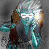

"Let us all come together and decide our fate, for only fortune and glory, misery and death exist in the depths below.
Is it risk or challenge that you seek?"
- "Sh'lan", City Governess
The race you choose for your character is very important because it affects quite a few things, including what guilds you can join, what alignment (either Good, Neutral or Evil) you can be, how fast you learn and what your maximum statistics can be. Below is a brief summary and description of each race available in the game.
Human
Humans are something you, as a player, can relate to. They have no natural resistances, but are the most versatile of all races and are allowed in every guild. They have the shortest life span, but are the quickest learners.
Elf
Elves are the magic users of the game. Tall and slender, most Elves become either Mages, Sorcerers, Healers or Wizards. They are excellent spell casters and can live longer than any other race. They are not, however, very good at fighting with weapons and have a low constitution. Elves also have a natural resistance to Magical and Mind attacks. Because of their lack of physical strength, there are some items (which require great strength) that Elves can never use.
Giant
Giants live for one thing - slicing a monster in two with one blow. Known for their brutal ways and having the advantage of being over eight feet tall, they make the best Warriors one can find. The only guilds to accept them are the Nomad, Seeker and Warrior guilds. Because of their size and bulk, Giants are resistant to most forms of attack, including Fire, Cold and Electrical. Poison and Disease don't seriously affect them either.
Gnome
Being very charismatic and possessing a slight resistance to Mind attacks, Gnomes make excellent Mages. Mostly good by nature, Gnomes are usually found in the Mage, Healer and Paladin guilds.
Dwarf
Dwarves are very curious, always poking at chests, injured characters, and carcasses. Neutral in nature and stockier than most races, Dwarves are found in quite a number of guilds, ranging from Warriors to Wizards. They are also fairly resistant to the elements (fire, cold, etc.).
Ogre
Somewhat dim-witted, Ogres are bulky and hairy, and make good Warriors and Scavengers. Since their constitution and resistances to such elements as Fire and Cold are so high, they are very hard to kill, but their low intelligence is quite often their downfall.
Morloch
Morlochs are huge masses of walking fur and muscle. Possessing a great deal of natural magic, they make excellent magic-users. However, because they are so ugly, they cannot easily charm some monsters, and their life span is almost as short as a humans. They also have a pretty good resistance to certain forms of monster attacks ( e.g. poison, disease).
Osiri
Osiris, which are distant relatives of the elves that have shifted to a more human-like race, are extremely dexterous and are mostly found in the Thief and Scavenger guilds. They also make marginal spell casters and are almost completely resistant to Electrical and Mind attacks.
Troll
A cross between an Ogre and an Elf, Trolls are strong and swift creatures that possess a few natural resistances. Making excellent Ninjas and Scavengers, they are quick to take up sides (either Good or Evil), but can sometimes be found as Neutral. Due to the aggressiveness in relation to their alignment, many guilds will not allow them.
Additional Topics:
Move to the next section to read about Race Statistics.
Move to the previous section to read about Character Information.
M1: "The Depths of Dejenol" is a Trademark of Decklin's Domain Ltd and is © Copyright 1994-2026 All Rights Reserved